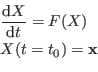
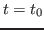
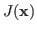
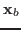
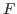
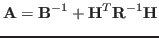
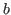
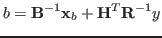

In order to lower the computational cost of the variational data assimilation process, we investigate the use of multigrid methods to solve the associated optimal control system. On a linear advection equation, we study the impact of the regularization term on the optimal control and the impact of discretization errors on the efficiency of the coarse grid correction step. We show that even if the optimal control problem leads to the solution of an elliptic system, numerical errors introduced by the discretization can alter the success of the multigrid methods. The view of the multigrid iteration as a preconditioner for a Krylov optimization method leads to a more robust algorithm. A scale dependent weighting of the multigrid preconditioner and the usual background error covariance matrix based preconditioner is proposed and brings significant improvements.
We consider the time evolution of a system governed by the following equation:
 |
(1) |

and will be our control parameter. The variational data assimilation problem consists in finding the minimum of a cost function
that measures the distance from the numerical model to the observations and includes a background or regularization term associated to a first guess
.
and the observations operator

where is a compact representation that includes both the model and the observation operators and the right hand side

is given by

The subject of this presentation is the application of multigrid methods for the solution of (4). On a model problem of a linear advection equation, the following key points are investigated:
We then consider the use of the multigrid cycle as a preconditioner for a
conjugate gradient algorithm. Best results are obtained by an hybrid
preconditioner written as a combination of the multigrid cycle and the
traditional background error covariance matrix (
) based
preconditioner.
[1] Laurent Debreu, Emilie Neveu, Ehouarn Simon, François-Xavier Le
Dimet and Arthur Vidard, 2014: Multigrid solvers and multigrid
preconditioners for the solution of variational data assimilation
problems submitted to QJRMS, http://hal.inria.fr/hal-00874643
[2] Emilie Neveu, Laurent Debreu and François-Xavier Le Dimet, 2011:
Multigrid methods and data assimilation - Convergence study and first
experiments on non-linear equations ARIMA, 14, 63-80,
http://intranet.inria.fr/international/arima/014/014005.html